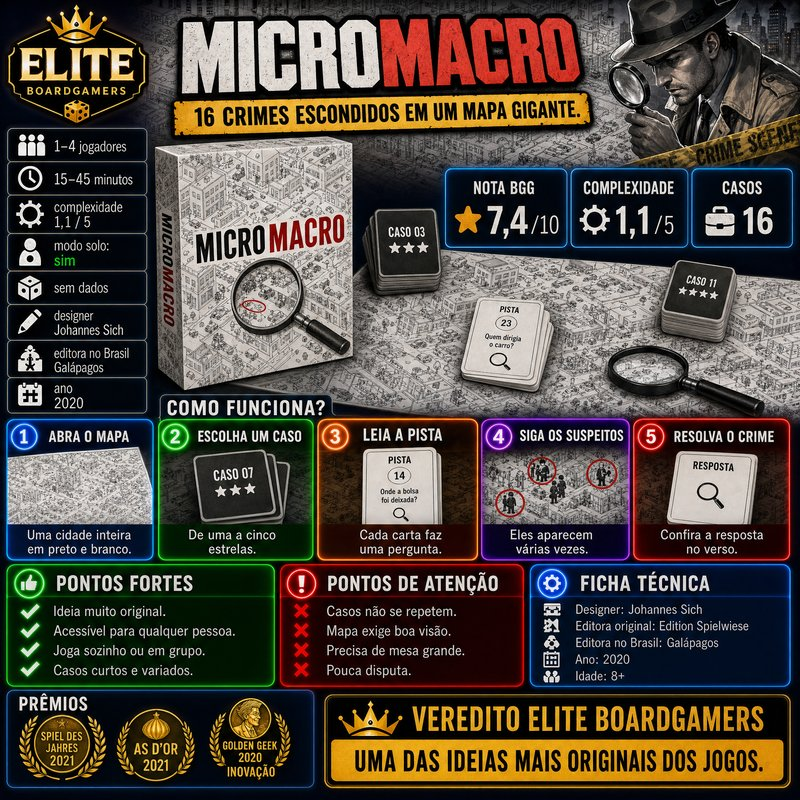
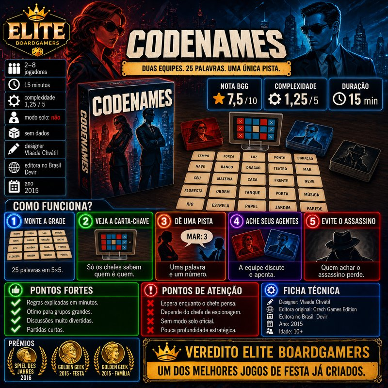
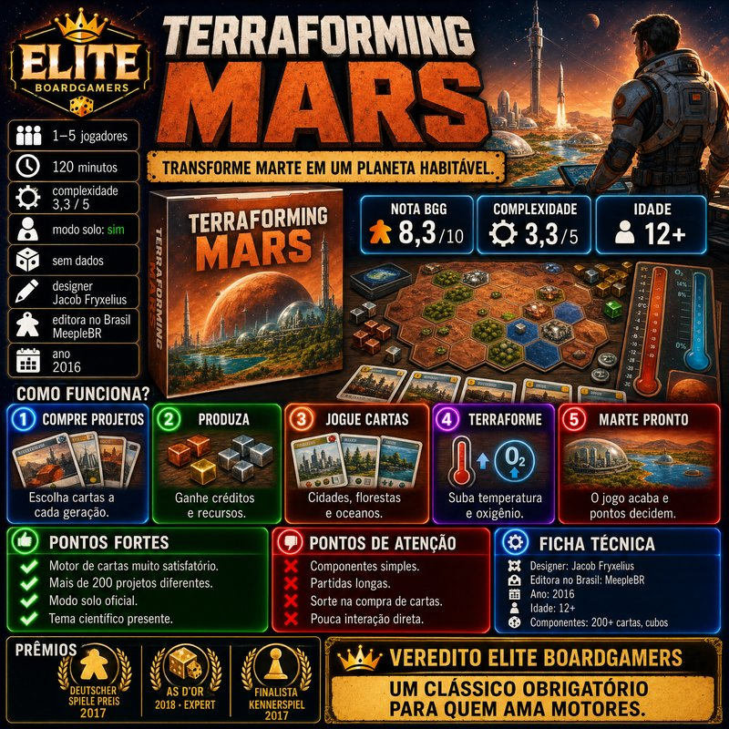
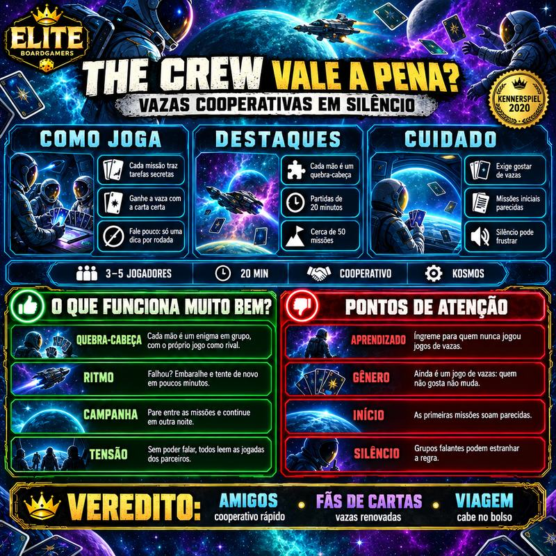
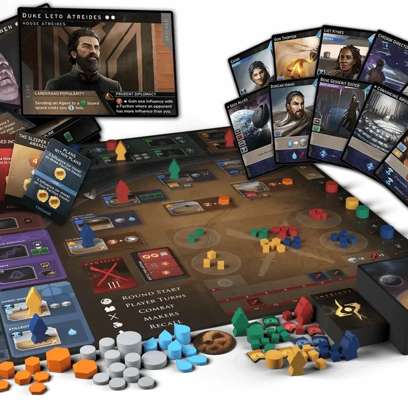
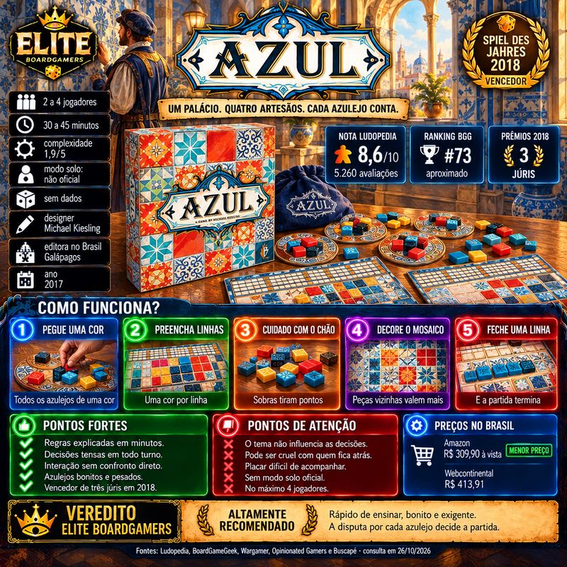
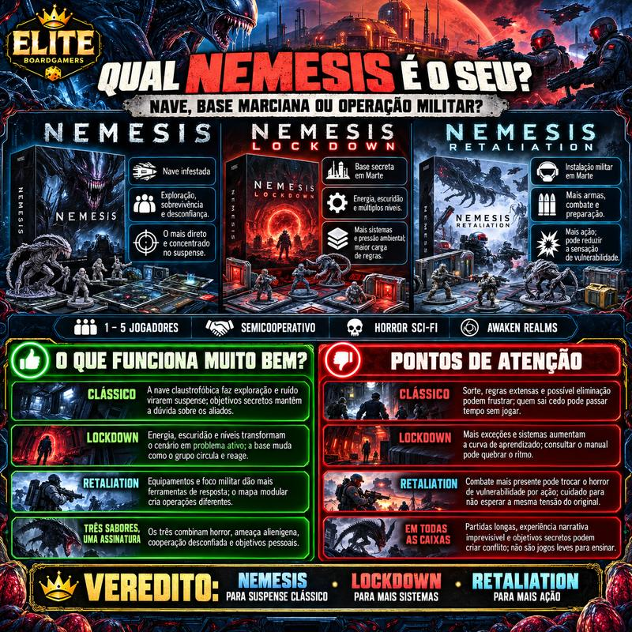

Resenhas Elite Boardgamers
O que funciona, pontos de atenção e para quem é cada jogo.

Sky Team vale a pena?
Resenha de Sky Team, vencedor do Spiel des Jahres 2024: como funciona, pontos fortes, pontos de atenção e para quem é.

Wingspan vale a pena?
Resenha de Wingspan, vencedor do Kennerspiel des Jahres 2019: como funciona, pontos fortes, pontos de atenção e para quem é.

MicroMacro: Crime City vale a pena?
Resenha de MicroMacro: A Cidade do Crime, vencedor do Spiel des Jahres 2021: como funciona, pontos fortes, pontos de atenção e para quem é.

Codenames vale a pena?
Resenha de Codenames (Código Secreto), vencedor do Spiel des Jahres 2016: como funciona, pontos fortes, pontos de atenção e para quem é.

Terraforming Mars vale a pena?
Resenha de Terraforming Mars, vencedor do Deutscher Spiele Preis 2017: como funciona, pontos fortes, pontos de atenção e para quem é.

The Crew vale a pena?
Resenha de The Crew, vencedor do Kennerspiel des Jahres 2020: como funciona, pontos fortes, pontos de atenção e para quem é.

Dune: Imperium vale a pena?
Resenha de Dune: Imperium, vencedor do As d'Or Expert 2022: como funciona, pontos fortes, pontos de atenção e para quem é.

Azul vale a pena?
Resenha de Azul, vencedor do Spiel des Jahres 2018: como funciona, pontos fortes, pontos de atenção e para quem é.

Qual Nemesis é o seu?
Nemesis, Lockdown e Retaliation: nave, base marciana ou operação militar.